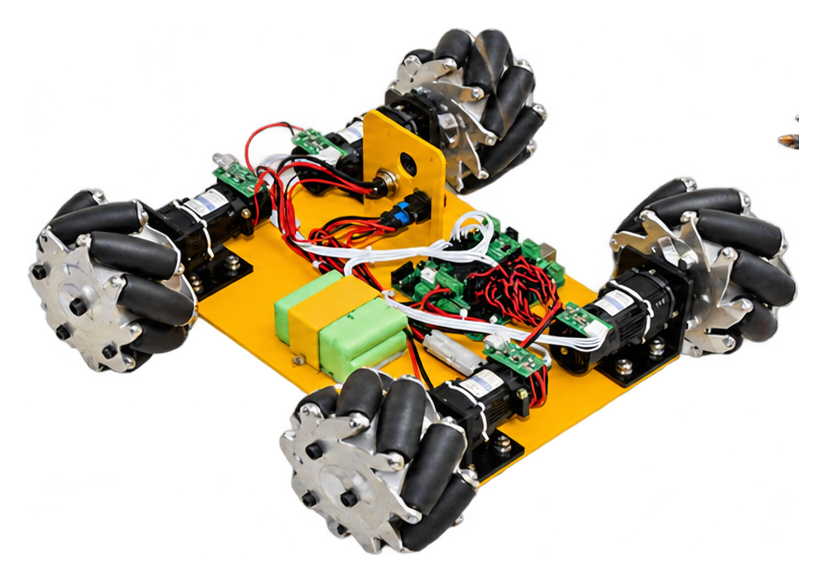
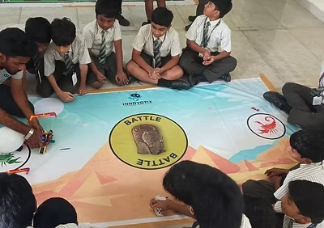
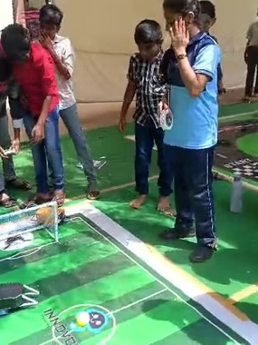
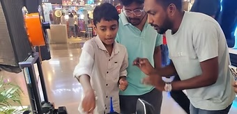
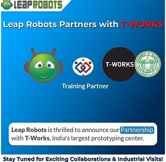

Robotics & STEM lab setup
Plan and equip school learning spaces with robotics kits, electronics resources and 3D-printing capabilities suited to the program.
FUTURE-READY LEARNING & LIVING
Transforming Vision into reality. Innovotix partners with schools to create hands-on learning environments in robotics, IoT, AI and electronics.
Learning by making.
Innovation by doing.

TWO WORLDS. ONE INNOVATION MINDSET.
Choose a path to explore our learning environments or intelligent living solutions.
ROBOTICS & STEM
School robotics labs, hands-on kits, age-wise learning pathways and teacher enablement.
Explore robotics →SMART HOME
Explore intelligent lighting, connected switches, sensors and everyday automation concepts.
Explore smart living →
ABOUT INNOVOTIX
We believe every child deserves the chance to explore, experiment and create.
Innovotix helps schools bring STEM to life through hands-on robotics labs, learning kits and guided activities. Our approach encourages students to ask questions, build prototypes, test ideas and develop problem-solving skills through experience.
Through the Atal Tinkering Lab ecosystem and school-focused STEM initiatives, we aim to make science and technology tangible, engaging and accessible.
Read our story ↗WHAT WE DO
We combine the right equipment, thoughtful curriculum and educator support to make a school robotics program sustainable.
Plan and equip school learning spaces with robotics kits, electronics resources and 3D-printing capabilities suited to the program.
Age-appropriate, project-led activities that introduce mechanics, coding, electronics, IoT and AI concepts.
Practical guidance that helps teachers facilitate activities, support projects and confidently run the lab.
Interactive demos and hands-on experiences that bring students, educators and families together around technology.
FIELD EXPERIENCE
For the past three years, Nitish Reddy has had the privilege of establishing robotic labs in some of Hyderabad's most prestigious schools.
Nitish Reddy shares a focus on creating engaging environments where students can explore robotics and STEM with practical kits and guided activities. The aim: nurture creativity, strengthen problem-solving and help students become confident makers.


 KIDS
KIDSCOMMUNITY & STUDENT EXPERIENCES
We successfully completed our very first event in collaboration with Next Generation School at MGB Mall, Nellore. Kids explored how to create games, learned the basics of Scratch programming, and built robots using sensors and coding. The event ended with a certificate presentation to all participants. A big thank you to everyone who made this event a success!
Know more about Kids Wonder Fest ↗PUBLISHED INNOVOTIX PROGRAMS
The following descriptions retain the information published on Innovotix's official website. Product availability and school requirements can be discussed during a demo.
OUR SERVICES
At Innovotix, our vision is to revolutionize how students learn about robotics and technology. We specialize in setting up advanced robotics labs in schools, outfitted with kits that excite young minds. Our approach includes lab installation, engaging curricula and dedicated teacher training to help schools run these programs.
With a focus on IoT compatibility and app-controlled features, we provide diverse project capabilities that make learning fun and impactful. Join us in revolutionizing the way students experience technology and igniting their curiosity for the future.
With easy-to-follow instructions, kids can dive into the world of robotics with no coding required. We prioritize safety and durability, using materials that encourage creativity and exploration. Our approach also promotes parental involvement.
Hands-on experiences with IoT kits empower students to explore and develop problem-solving skills, paving the way for future innovators.
A kit for teaching artificial intelligence concepts and practical applications.
A hands-on kit for building and creativity with modular components.
Each box contains essential items like capacitors, resistors, LEDs and switches, enabling young minds to explore the fundamentals of electronic circuits.
SCHOOL PARTNERSHIPS & ATAL TINKERING LABS
Through the Atal Tinkering Lab initiative, Innovotix provides schools with robotic kits and resources that inspire innovation and creativity. We aim to create engaging hands-on environments where students can experiment, build and learn. Our mission is to set up interactive STEM labs across Tier 2 and Tier 3 cities, helping students develop creativity, critical thinking and problem-solving skills.
FROM THE INNOVOTIX CLASSROOMS
Original student, teacher, event and classroom photographs from Innovotix's published website, alongside the supplied project photographs.


COLLABORATION BUILDS POSSIBILITY
Working alongside education and innovation partners helps bring practical STEM experiences closer to students.

Innovotix is proud to share that its esteemed partner Leap Robots achieved a significant milestone through a partnership with the Government of Telangana and T-Works. The collaboration reflects a shared commitment to innovation and creating transformative opportunities.
Visit Leap Robots ↗SCHOOL DEMONSTRATION
Students at Viswasai DR SRK School enjoyed an interactive demonstration of learning robots, engaging enthusiastically with the technology. The educational robots captivated students, who participated in activities designed to showcase robot capabilities and potential applications in learning environments.
HAVE A PROJECT IN MIND?
Talk to us about a school lab, student demo or smart-home requirement.